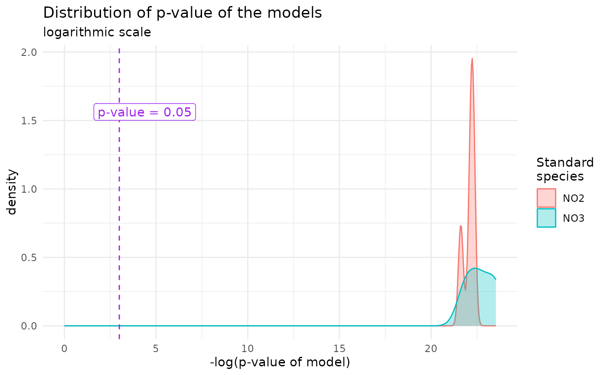
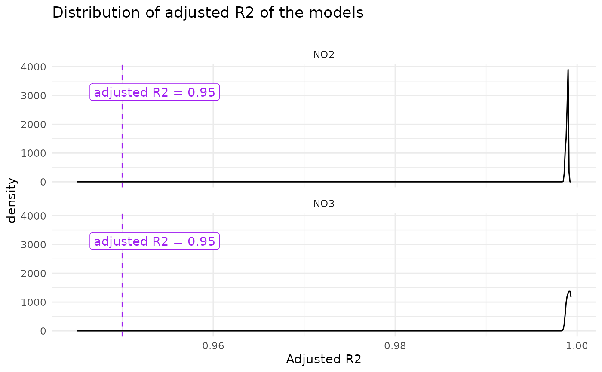

Plot Distribution of Model QC Parameters (p-val, R2 and adjusted R2)
Source:R/lm_std_curve.R
density_lm_param.RdPlot Distribution of Model QC Parameters (p-val, R2 and adjusted R2)
Usage
density_lm_param(
lm_data,
p_or_r = "p",
threshold = 0.05,
facetting_std_sp = TRUE,
color_std_sp = TRUE
)Arguments
- lm_data
lm_data in the shape as generated by
lm_std_curve(), possibly as a subset to observe only suspicious curves. Must contain a column namedstd_sp(add it withdplyr::left_join()if necessary)- p_or_r
Defines which parameter to plot Accepted values are
"p"(default),"adjR2"and"R2".- threshold
Defaults at 0.05 (as a significance threshold of the p-value). Accepts any value. For R2 or adjusted R2, 0.95 or 0.98 might be good options. This is a graphical parameter only (defines the position of the vertical line)
- facetting_std_sp
Logical, defaults as
TRUE. Whether to use faceting according to standard species- color_std_sp
Logical, defaults as
TRUE. Whether to group according to standard species (and overplot with several colours)
Examples
lm_data <- lm_output$lm_data # no column called "std_sp"
# get standard species from std_corrected
(std_sp <- std_corrected |> dplyr::select(plate_id, std_sp) |> unique())
#> # A tibble: 5 × 2
#> plate_id std_sp
#> <chr> <chr>
#> 1 NO3_1F1 NO3
#> 2 NO3_1F2 NO3
#> 3 NO3_1F3 NO3
#> 4 NO3_1F4 NO3
#> 5 NO3_1F5 NO3
# Artificially changing a std_sp for the sake of facetting
std_sp$std_sp[3:4] <- rep("NO2")
lm_data_full <- lm_data |> dplyr::left_join(std_sp, by = dplyr::join_by(plate_id))
density_lm_param(lm_data_full, facetting_std_sp = FALSE)

density_lm_param(
lm_data_full,
p_or_r = "adjR2", threshold = 0.95,
color_std_sp = FALSE)
